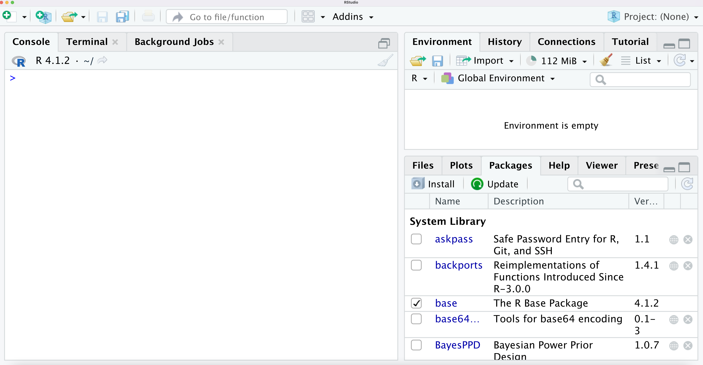
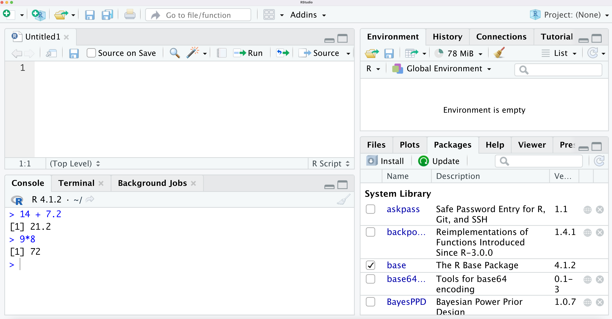
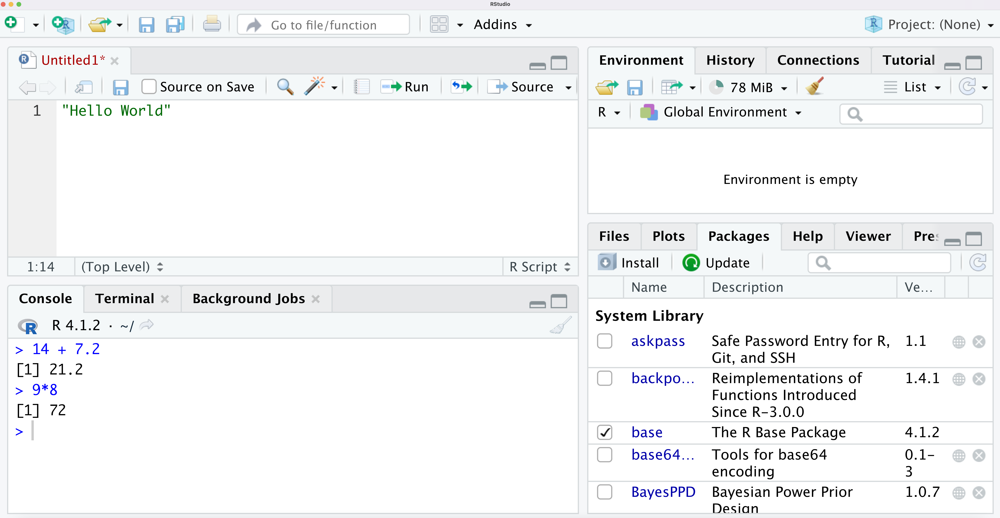
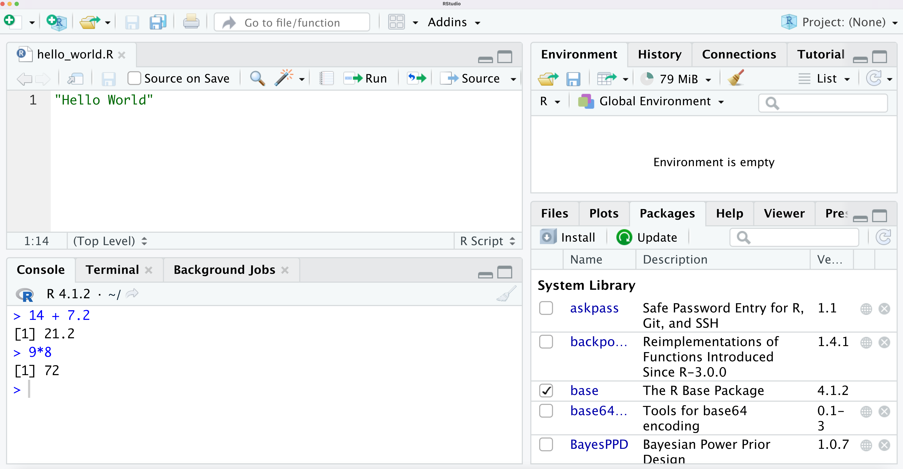
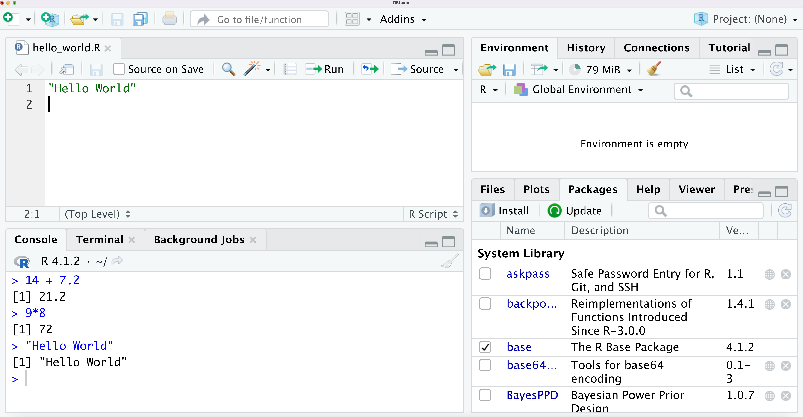
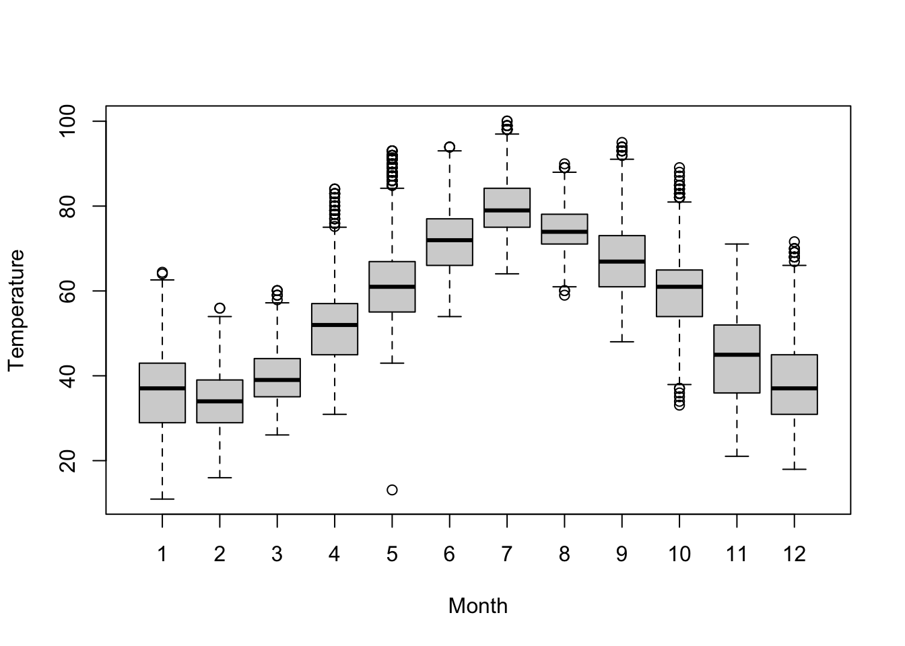

Chapter 1 Getting Started
1.1 R and RStudio
R
- Free software developed by R Core Team
- Available at https://www.r-project.org/
- Software and packages are managed by the nonprofit organization “R Foundation”
RStudio
- An integrated development environment (IDE) for programming in R.
- Provides many add-ons to R available in a single interface.
- Developed by RStudio, Inc.
- Available in both free (AGPLv3) and commercial editions at https://posit.co/download/rstudio-desktop/#download
R and RStudio are separate things.
- You should install R first before RStudio
R
- Download and install R at https://cloud.r-project.org/
RStudio
- Download and install the open source version of RStudio Desktop at https://rstudio.com/products/rstudio/download/#download
When you open Rstudio, it should look something like: 
The left-hand panel of RStudio is where you can type in R code directly.
For example, we can treat R as a calculator and add and multiply numbers by typing them directly in the left-hand panel.
Typing and running R code line-by-line like this is referred to as using R in interactive mode.
When writing more complex code that you can reuse, it is usually better to write it in a separate file such as an R script (this type of file ends in .R).
To create a new R script, go to File –> New File –> R script in Rstudio.

As an example of writing and running R scripts, let’s write an R script that will simply print out the message “Hello World” whenever we run the script.
To do this we just write the following R code in the empty R script/l

- Before running the script, you can save the file as “hello_world.R”.

To run the script, just click the “Run” button located at the top right of your R script.
The message “Hello World” should appear in the R console below: 
1.2 An Extended Example: the NYC flights data
To illustrate some of the capabilities of R for exploring and summarizing data, we will look at the “NYC flights” dataset.
This is a dataset that contains information on flights that departed from the New York City region in 2013.
This dataset is available in an R package called “nycflights13”
1.2.1 Installing R packages
To use an R package, you must first install it.
Installing the
nycflights13package can be done with the following command:
- Note that, if a package has been installed previously, you don’t need to install it again in order to use it.
–
- Once an R package has been installed, you can “load” it into your R session with the
libraryfunction:
- Running the
librarycommand just makes the datasets in thenycflights13package available for you to use in your R session.
1.2.2 NYC flights data details
There are 5 datasets in the
nycflights13package:airlines,airports,flights,planes,weatherLet’s first look at the
planesdataset.This dataset is stored as a data frame in R.
- Using a dataframe is the most standard way to store a dataset in R
An R data frame has a certain number of rows (which usually represent different observations) and columns (which usually represent different variables).
I will refer to the variables in a data frame as “data variables”.
This is to distinguish it from R variables that you can create in your R session.
The
planesdata frame has 3322 rows and 9 columns.The number of rows and columns of a data frame can be found by using the
dimfunction.
## [1] 3322 9Each row of the
planesdata frame contains information about a specific airplane.You can look at the contents of the first 6 rows of a data frame by using the
headfunction
## # A tibble: 6 × 9
## tailnum year type manufacturer model engines seats speed engine
## <chr> <int> <chr> <chr> <chr> <int> <int> <int> <chr>
## 1 N10156 2004 Fixed wing multi … EMBRAER EMB-… 2 55 NA Turbo…
## 2 N102UW 1998 Fixed wing multi … AIRBUS INDU… A320… 2 182 NA Turbo…
## 3 N103US 1999 Fixed wing multi … AIRBUS INDU… A320… 2 182 NA Turbo…
## 4 N104UW 1999 Fixed wing multi … AIRBUS INDU… A320… 2 182 NA Turbo…
## 5 N10575 2002 Fixed wing multi … EMBRAER EMB-… 2 55 NA Turbo…
## 6 N105UW 1999 Fixed wing multi … AIRBUS INDU… A320… 2 182 NA Turbo…The
planesdata frame has 9 variables.tailnum: The tail number of the plane. This number is a unique identifier for each plane.year: The year the plane manufactured.type: The type of plane.manufacturer: The manufacturer of the plane.model: The model of the plane.engines: The number of engines that the plane has.seats: The number of seats that the plane has.speed: Average cruising speed in mph.engine: Type of engine.
Running the command
help(planes)can give more information about this dataset.
1.2.3 Summarizing specific data variables
You can access individual variables from
planesby using the$operator.For example, if we want to assign the values in the
yearcolumn into a new R variable named plane_year, we do the following:
After running the above line of code,
plane_yearis an Rvectorthat has 3322 elements.The
lengthfunction tells us how many elements are in a vector
## [1] 3322We can look at the first x elements of
plane_yearby using the syntaxplane_year[1:x].For example, let’s look at the first 5 elements of
plane_year:
## [1] 2004 1998 1999 1999 2002- We can get a count of how many times each value of
yearoccurs by using thetablefunction
## plane_year
## 1956 1959 1963 1965 1967 1968 1972 1973 1974 1975 1976 1977 1978 1979 1980 1983
## 1 2 2 1 1 1 1 1 1 3 3 2 2 4 4 1
## 1984 1985 1986 1987 1988 1989 1990 1991 1992 1993 1994 1995 1996 1997 1998 1999
## 5 23 17 40 75 60 90 108 109 59 48 54 55 74 174 206
## 2000 2001 2002 2003 2004 2005 2006 2007 2008 2009 2010 2011 2012 2013
## 244 284 212 150 192 162 126 123 147 84 48 66 95 92The above R output says that 147 of the planes in the
planesdata frame were manufactured in 2008 and 92 planes in theplanesdata frame were manufactured in 2013.The
tablefunction is useful for data variables that have a relatively small number of distinct values.For numeric data variables that are better thought of as continuous variables, one often summarizes these data variables by looking at things like the mean, median, or standard deviation.
Using the
summaryfunction on a single data variable gives you a useful “six-number summary” about that data variable:
## Min. 1st Qu. Median Mean 3rd Qu. Max.
## 2.0 140.0 149.0 154.3 182.0 450.0Another dataset available in the
nycflights13package is theweatherdata frame.This data frame has 26115 rows and 15 columns.
## [1] 26115 15- You can output all of the data variable names by using the
namesfunction:
## [1] "origin" "year" "month" "day" "hour"
## [6] "temp" "dewp" "humid" "wind_dir" "wind_speed"
## [11] "wind_gust" "precip" "pressure" "visib" "time_hour"- One of the data variables is
month. This just records what month the weather observation was made in
##
## 1 2 3 4 5 6 7 8 9 10 11 12
## 2226 2010 2227 2159 2232 2160 2228 2217 2159 2212 2141 21441.2.4 Subsetting Data
An important part of many data analyses is looking at data summaries of specific subsets of interest.
To create a new data frame which is a subset of the original data frame, you can use the
subsetfunction.For example, if we only want to look at weather in the month of January, we can a new data frame which only contains January observations (where
monthequals 1)
- The
JanuaryWeatherdata frame has 2226 observations
## [1] 2226 15- The average temperature over the month of January is
## [1] 35.63566One can take more complex subsets of a data frame by using logical expressions in the second argument of the
subsetfunction.For example, if you wanted to create a data frame that only has observations in February that are above 40 degrees Fahrenheit, you could use the following code:
1.2.5 Plotting Data
R has many functions that can aid data visualization.
For example, you can create a simple histogram of the temperature variable by using the vector
weather$tempinside thehistfunction:

- You could create separate boxplots of temperature for each month by using the modeling syntax
temp ~ monthwithin the boxplot function:
## Use x-axis label "Month" and y-axis label "Temperature" in the figure:
boxplot(temp ~ month, data=weather, xlab="Month",
ylab="Temperature")
1.3 Using R as a calculator
When first starting with R, it can be helpful to note that R can be used as a basic calculator.
For example, if we just type in
42 + 17into the R console, it should print out the sum:
## [1] 59- We can compute the square root of 243, \(1.56^{124}\), and \(7.21 \times 8^{4}\), just by typing these expressions into the R console
## [1] 15.58846## [1] 193.44## [1] 29532.161.4 Variables in R
When starting to work with more complicated mathematical operations in R, it is often useful to store intermediate values in named variables instead of using R as a calculator in interactive mode.
For example, the following R code creates the variables
x, y, zand assigns them the values \((42 + 17)\sqrt{43}\), \(7.21(8^{4}) + \ln(2.34)\), and
\((42 + 17)\sqrt{43}/[ 7.21(8^{4}) + \ln(2.34) ]\) respectively.
## [1] 0.01310022Here,
x,y, andzare examples of variables.The pair of characters
<-used together is known as the assignment operator in R.x <- 2assigns the value2to the variablex.
In general, a variable is the named storage of a value (or an object) in memory.
Why do we need variables?
- To reuse the same value later on.
- To generalize an expression to use in many cases.
How to use variables in R?
To set the value of a variable, use assignment operator
<-To use the value, simply use the variable name as if it were its stored value.
For example, …
1.4.1 Rules for choosing variable names in R
Variables can be named however you want as long as you follow the several variable-naming rules that R has.
In R variable names can include the following:
- letters: A-Z a-z
- digits: 0-9
- underscore and period: _ .
Additional rules:
- Variable names must start with letters or a period (not underscore or digits)
- If a variable name starts with a period, it cannot be followed by a number.
- Variable names are case sensitive.
The following tables shows examples of valid and invalid variable names in R
| Valid | Invalid |
|---|---|
| i | 2things |
| my_variable | location@ |
| answer42 | _user.name |
| .name | .3rd |
While you are free to choose variable names however you like as long as you follow the variable-naming rules of R, making variable names descriptive is highly recommended.
Descriptive variable names make it easier to read code. This is very helpful if:
- You are sharing your code or
- Looking back at code you wrote many weeks/months ago
Using a consistent convention for naming variables is recommended:
1.4.2 Variable Assignment
- Variables can be assigned using either
<-or=
## [1] 123## [1] 123The pair of characters
<-is the classic symbol used for variable assignment in R.The use of
<-instead of=is often recommended in R style guides:
<-and=will work the same if they are both used in the “usual way” (when assigning variables within or outside of a function).One exception, is when used inside a function call. For example, if we use
=in the functionsd(x):
## [1] 1.581139## [1] 1.581139## [1] 1 2 3 4 5However, using something like
sd(x <- c(1,2,3,4,5))where we assign variables in a function call is not really done that often.It is not common to assign variables in a function call (I never do it).
Whenever, using a function
fwith a keyword such asx, you will generally want to call that function usingf(x = ...)So, in my opinion, there is not really a strong reason to prefer using
<-over=for assignment.There are other justifications for using
<-such as the ability to do assignment from the left by using the reverse symbol->
## [1] 1 2 3 41.4.3 Types of variables
Variables can be used to store different types of values.
Common types include numeric, text, and logical values.
## [1] 3.2Here,
xis actually a vector (basically a collection of elements storing the same type of data).It is a vector of length one (i.e., it only has one element).
This is the reason why you see
[1]printed out next to the number 3.2.- This means that the first element of the vector
xis \(3.2\).
- This means that the first element of the vector
R treats every variable as some type of collection (e.g., vectors, matrices, lists, etc.).
- There are no separate data types in R for individual numbers.
The elements in a vector can have different types (or modes).
You can find the types of the elements in a vector by using the function typeof
## [1] "double"## [1] 3## [1] "double"- The other common types for the elements in a vector include
- logical (TRUE or FALSE) values
- character basically text, e.g., “hello”, “car”, …
## [1] "logical"## [1] "character"- We will discuss these types in more detail later on when we discuss vectors, matrices, and lists.
1.5 R Operations with numbers
- As we mentioned before, …
| Operator | Meaning | Example | Result |
|---|---|---|---|
| + | addition | 5 + 8 | 13 |
| - | subtraction | 90 - 10 | 80 |
| * | multiplication | 4 * 7 | 28 |
| / | division | 7 / 2 | 3.5 |
| %% | remainder | 7 %% 2 | 1 |
| ^ | exponent | 3 ^ 4 | 81 |
| ** | exponent | 3 ** 4 | 81 |
- R operations with numbers have similar precedence rules to arithmetic operations
| Operator | Description | Precedence |
|---|---|---|
| +, - | addition and subtraction | low |
| *, /, %% | multiplication, division, remainder | … |
| **, ^ | exponentiation | … |
| (expressions…) | Parenthesis | high |
- Examples of operation precedence can be seen when typing the following expressions into the R console:
## [1] 163## [1] 2431.6 Brief introduction to vectors in R
The vector is probably the most fundamental data structure in R.
A vector is essentially a collection of elements that all have the same “type”.
For example, a vector can be composed of a collection of numbers or a collection of characters.
However, a vector cannot contain both numbers and characters.
As an example, we can create a vector named
xthat contains the numbers 1, 7, and 4.- This is done with the following R code:
The variable
xis a vector of length 3. The first element ofxis 1, the second element ofxis 7, and the third element ofxis 4.You can access elements of the vector
xby using the[i]syntax.For example, if you wanted to look at the second element of
xyou would use:
## [1] 7For vectors that contain numeric values, R has many built-in functions that can compute summary statistics about the numbers the vector.
For example, if we create the vector
ythat has values 1, 3, 10, 8,
then we can easily compute the minimum, median, maximum, and standard deviation of this vector with the following R code:
## [1] 1## [1] 5.5## [1] 10## [1] 4.203173As we saw in the
nycflightsexample, when we extract a data variable from a data frame, R returns the data variable as a vector.For example, if we extract the
seatsvariable from theplanesdata frame and assign it to a variable namednum_seats, thennum_seatswill be a numeric vector
- The vector
num_seatshas 3322 elements in it:
## [1] 3322- The 10th element of
num_seatsis 182:
## [1] 182- The mean of the elements in
num_seatsis 154.3
## [1] 154.3164and the largest number inside the num_seats vector is 450:
## [1] 4501.7 Writing Comments in R
The comment symbol in R is the hashmark symbol
#.Comments allow you to write notes in English (or any other human language) within your R programs.
Comments are basically pieces of text the computer will ignore when interpreting your code.
You can use comments to help explain what your code is doing.
Writing comments becomes more helpful as your code becomes more complex.
Writing comments can make code more readable for others.
In R, the hashmark symbol
#marks the beginning of a comment.Everything on a line following the hashmark symbol is ignored.
In the following example, both the text “This is an example of a comment” and the assignment
x <- 64are ignored
## [1] 42Note also that you can write comments on the same line as an R statement.
- Everything to the right of the hashmark
#symbol will be ignored.
- Everything to the right of the hashmark
## [1] 421.8 Exercises
- Compute the number
directly in the R console.
- Write an R script that assigns the value …
to a variable named x and prints the result in the Console when you run
the script.
- What will be the value of the variable
yafter running the following code?
- Which of the following is NOT a valid variable name in R?
- .independent_variable3
- _independent_variable3
- independent_variable3
- independent.variable3